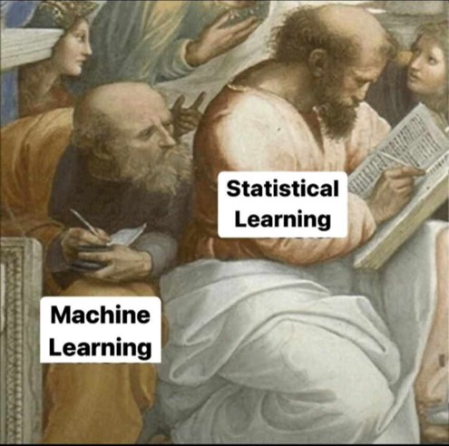

2025-06-24
What is the purpose of Machine Learning?
Learn patterns from data automatically
Make predictions or decisions without explicit programming
Improve performance over time as more data becomes available
Key Goals
Prediction – Estimate future or unknown outcomes
Classification – Assign labels to data points
Clustering – Discover hidden groupings in data
Anomaly detection – Identify unusual patterns or events
Scope of Applications
Healthcare, finance, marketing, industry, security, and more
Examples: spam filtering, disease diagnosis, fraud detection, recommendation systems
Core Idea
Deep Learning Breakthroughs
Transformer architectures (e.g., BERT, GPT) revolutionized NLP
Diffusion models for image generation (e.g., DALL·E, Stable Diffusion)
Self-supervised learning for more efficient training
Automated Machine Learning (AutoML)
Model selection, tuning, and deployment made easier
Tools: Google AutoML, Auto-sklearn, H2O.ai
Explainable AI (XAI)
Methods like SHAP, LIME help interpret complex models
Greater trust and transparency in predictions
Federated & Privacy-Preserving Learning
Learning across decentralized data sources
Preserves user privacy (e.g., in mobile devices)
Real-Time & Edge ML
ML models running on low-power devices
Applications: smart cameras, IoT, mobile health tracking
Models trained on diverse tasks and data types combining text, image, audio (e.g., CLIP, Gemini)
Supervised learning relies on labeled data for training models, making it effective for tasks such as spam detection and medical diagnosis.
In contrast, unsupervised learning discovers hidden patterns in unlabeled data, commonly used in customer segmentation and anomaly detection.

Statistical learning
Used to explain relationships between variables and for statistical inference
High interpretability at the cost of limited predictive power
Machine learning
Mainly used for prediction
High predictive power at the cost of interpretability
Multiplicity of Model Hyperparameters
Linear Model (OLS): no parameters
K-NN: k - number of neighbours
Decision Tree: cp, minbucket, minsplit, maxdepth
Random Forest: cp, minbucket, minsplit, maxdepth, ntree, mtry
Multiplicity of Algorithms
Decision Tree: CART, ID3, C4.5, C5.0, CHAID
Random Forest: Bagging, Random Patches, Random Subspaces, Pasting
Hyperparameters in machine learning are the settings or configurations that you set before training a model — they control how the model learns from data.
They are not learned from the data directly, but rather are set manually or through tuning.
They significantly influence:
Model accuracy
Training time
Overfitting or underfitting